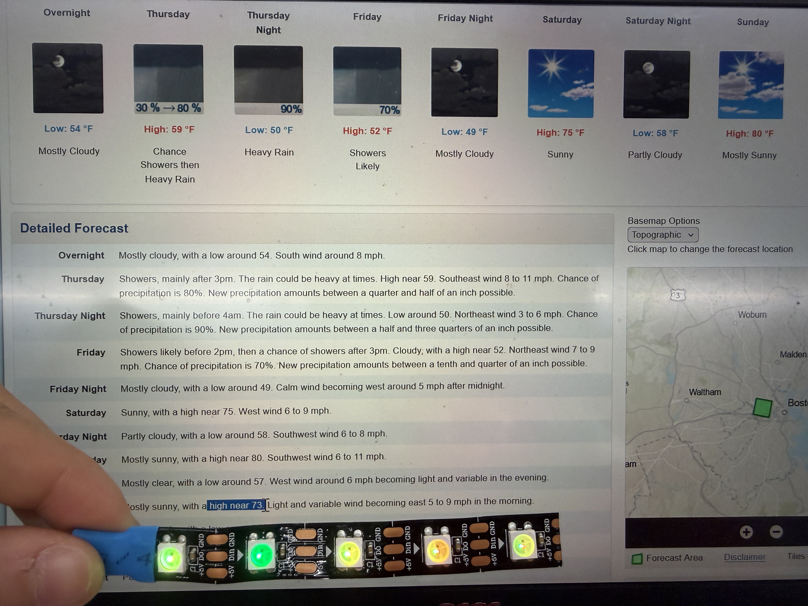

<div class="textcontainer">
<p class="margin"> </p>
<h3>Week 9: Radio, WiFi, Bluetooth (IoT)</h3>
<br>
For this week's assignment, <a href="https://dragoncat5482.github.io/PS70-assignments/" target="_blank"> Alice</a> and I decided to make a mini weather station using temperature forecasts and wind gusts as inputs and an LED strip and yellow motor as outputs.
Alice with her CS powers pulled the wind speed and temperature forecast values from the <a href="https://api.weather.gov/" target="_blank"> National Weather Service API. Wind speeds are given as strings so she had to add in an extra type conversion to pull the numerical value. </a>
I 3D modeled and printed our fake anemometer and integrated the LED strip with different RGB color values representing different temperature ranges (see table below). We made the anemometer activate at wind speeds over 10 mph with increasing velocity through mapping wind speeds to motor speeds.
<br>
<table>
<tr>
<th>Temperature Range</th>
<th>Color</th>
<th>RGB Value</th>
</tr>
<tr>
<td>< 30°F</td>
<td>Purple</td>
<td>rgb(128, 0, 255) <span class="color-box" style="background-color: rgb(128,0,255);"></span></td>
</tr>
<tr>
<td>30–39°F</td>
<td>Blue</td>
<td>rgb(0, 0, 255) <span class="color-box" style="background-color: rgb(0,0,255);"></span></td>
</tr>
<tr>
<td>40–49°F</td>
<td>Light Blue</td>
<td>rgb(0, 191, 255) <span class="color-box" style="background-color: rgb(0,191,255);"></span></td>
</tr>
<tr>
<td>50–59°F</td>
<td>Green</td>
<td>rgb(0, 255, 0) <span class="color-box" style="background-color: rgb(0,255,0);"></span></td>
</tr>
<tr>
<td>60–69°F</td>
<td>Yellow-Green</td>
<td>rgb(128, 255, 0) <span class="color-box" style="background-color: rgb(128,255,0);"></span></td>
</tr>
<tr>
<td>70–79°F</td>
<td>Yellow</td>
<td>rgb(255, 255, 0) <span class="color-box" style="background-color: rgb(255,255,0);"></span></td>
</tr>
<tr>
<td>80–89°F</td>
<td>Orange</td>
<td>rgb(255, 128, 0) <span class="color-box" style="background-color: rgb(255,128,0);"></span></td>
</tr>
<tr>
<td>90–100°F+</td>
<td>Red</td>
<td>rgb(255, 0, 0) <span class="color-box" style="background-color: rgb(255,0,0);"></span></td>
</tr>
</table>
Here is the final product!
<figure>
<p></p>
<img src="./Anemometer.JPG" alt="The anemometer not spinning when the wind is 8 mph" width=30% height=14%>
<figcaption> The temperature LEDs colored corresponding to the daytime temperature and the anemometer not spinning when the wind is 8 mph
</figcaption>
</figure>
The motor ended up spinning pretty fast, so we powered it by 3.3V. It was also important to make sure the spinning was the right direction for an anemometer even though it is powered by a motor, not the actual wind.
<iframe src="<"https://drive.google.com/file/d/1OJjzSkZhLXi9xnnbQMt_aVB5cxA89-Ti/preview" width="640" height="480"></iframe>" width="640" height="480"></iframe>
<p class="margin"> </p>
<div class="flexrow">
<a id="btn" href="Anemometer3DFiles.zip" download>Anemometer 3D File
</a>
</div>
<p class="margin"> </p>
</div>